Крипто и деньги — на практике
سواد مالی و کریپتو، کاربردیКак работают блокчейны, как проверить токен, прежде чем к нему прикасаться, и как защититься от мошенничества.

با هم صنعت، شرکتها و فضای کسبوکار ایران را بهتر میشناسیم و رمزارز و فناوری مالی را به زبان ساده یاد میگیریم.
Учись · Соединяйся · Развивайся
Фото:عکس: Amir PashaeiCC BY-SA 4.0

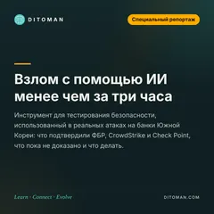
Инструмент для тестирования безопасности, использованный в реальных атаках на банки Южной Кореи: что подтвердили ФБР, CrowdStrike и Check Point, что пока не доказано и что делать.
ابزار آزمایش امنیت که در حملهی واقعی به بانکهای کره به کار رفت: آنچه FBI و CrowdStrike تأیید کردهاند، آنچه هنوز ثابت نشده و چه باید کرد.
Читать материал
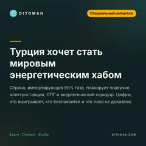
Страна, импортирующая 95% газа, планирует плавучие электростанции, СПГ и энергетический коридор. Цифры, кто выигрывает, кто беспокоится и что пока не доказано.
کشوری که ۹۵٪ گازش وارداتی است، با نیروگاه شناور، LNG و کریدور برق میخواهد هاب شود. ارقام، برندگان، نگرانیها و آنچه هنوز ثابت نشده.
Читать материал
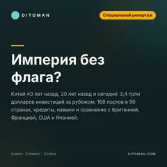
Китай 40 лет назад, 20 лет назад и сегодня: 3,4 трлн долларов инвестиций за рубежом, 168 портов в 90 странах, кредиты, навыки и сравнение с Британией, Францией, США и Японией.
چین ۴۰ سال پیش، ۲۰ سال پیش و امروز: ۳٫۴ تریلیون دلار سرمایهگذاری خارجی، ۱۶۸ بندر در ۹۰ کشور، وام، مهارت و مقایسه با بریتانیا، فرانسه، آمریکا و ژاپن.
Читать материал
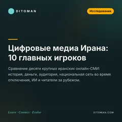
Сравнение десяти крупных иранских онлайн-СМИ: история, деньги, аудитория, национальная сеть во время отключения, ИИ и читатели за рубежом.
ده رسانه از نُه زاویه: تاریخچه، پول، مخاطب، شبکهی ملی در روزهای قطع اینترنت، هوش مصنوعی و خوانندهی خارج از ایران.
Читать материал
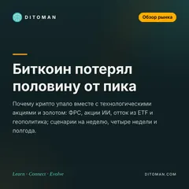
Почему крипто упало вместе с технологическими акциями и золотом: ФРС, акции ИИ, отток из ETF и геополитика; сценарии на неделю, четыре недели и полгода.
چرا کریپتو همزمان با سهام فناوری و طلا ریخت؛ با سناریوهای مثبت و منفی برای یک هفته، چهار هفته و شش ماه.
Читать материал
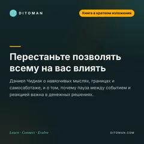
Дэниел Чидиак о навязчивых мыслях, границах и самосаботаже, и о том, почему пауза между событием и реакцией важна в денежных решениях.
کتاب دنیل چیدیاک دربارهی بیشفکری، مرزبندی و خودتخریبی؛ و اینکه چرا فاصلهی بین اتفاق و واکنش در پول هم مهم است.
Читать материал
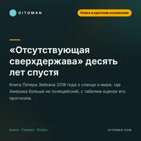
Книга Питера Зейхана 2016 года о сланце и мире, где Америка больше не полицейский, с табелем оценок его прогнозов.
کتاب پیتر زایهان دربارهی انقلاب شیل و جهانی بدون پلیس آمریکا، با کارنامهی پیشبینیهایش تا امروز.
Читать материал
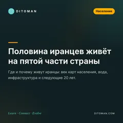
Где и почему живут иранцы: век карт населения, вода, инфраструктура и следующие 20 лет.
مردم ایران کجا زندگی میکنند و چرا: صد سال نقشهی جمعیت، نقش آب، زیرساختها و ۲۰ سال آینده.
Читать материал
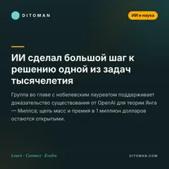
Группа во главе с нобелевским лауреатом поддерживает доказательство существования от OpenAI для теории Янга — Миллса; щель масс и премия в 1 миллион долларов остаются открытыми.
تأیید اثبات هوش مصنوعی برای وجود نظریهی یانگ–میلز؛ شکاف جرمی و جایزهی یک میلیون دلاری هنوز باز است.
Читать материал
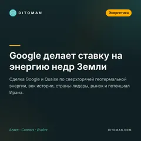
Сделка Google и Quaise по сверхгорячей геотермальной энергии, век истории, страны-лидеры, рынок и потенциал Ирана.
قرارداد گوگل و Quaise، فناوری زمینگرمایی فوقداغ، تاریخچه، بازار و ظرفیت ایران از مشکینشهر تا دماوند.
Читать материал
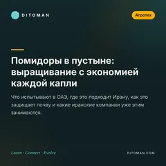
Что испытывают в ОАЭ, где это подходит Ирану, как это защищает почву и какие иранские компании уже этим занимаются.
آزمایشهای امارات، کاربرد در مناطق خشک ایران، حفاظت از خاک و شرکتهای ایرانی فعال در کشت هوشمند.
Читать материал
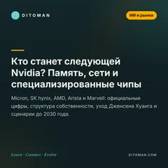
Micron, SK hynix, AMD, Arista и Marvell: официальные цифры, структура собственности, уход Дженсена Хуанга и сценарии до 2030 года.
مایکرون، اسکی هاینیکس، AMD، آریستا و مارول: ارقام رسمی به دلار و تومان، مالکیت، کنارهگیری جنسن هوانگ و سناریوها.
Читать материал
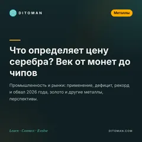
Промышленность и рынки: применение, дефицит, рекорд и обвал 2026 года, золото и другие металлы, перспективы.
صنعت در برابر بازار: کاربردها، کسری بازار، رکورد و سقوط ۲۰۲۶، مقایسه با طلا و چشمانداز آینده.
Читать материал
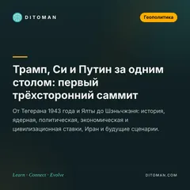
От Тегерана 1943 года и Ялты до Шэньчжэня: история, ядерная, политическая, экономическая и цивилизационная ставки, Иран и будущие сценарии.
از تهران ۱۹۴۳ و یالتا تا شنژن: تاریخ، ابعاد هستهای، سیاسی، اقتصادی و تمدنی، جایگاه ایران و سناریوهای پیش رو.
Читать материал
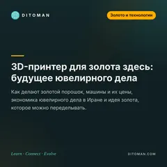
Как делают золотой порошок, машины и их цены, экономика ювелирного дела в Иране и идея золота, которое можно переделывать.
پودر طلا چطور ساخته میشود، دستگاهها و قیمتها، اقتصاد جواهر در ایران و ایدهی طلای قابلبازطراحی.
Читать материал
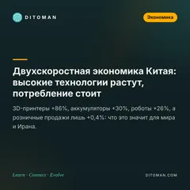
3D-принтеры +86%, аккумуляторы +30%, роботы +26%, а розничные продажи лишь +0,4%: что это значит для мира и Ирана.
چاپگر سهبعدی ۸۶٪، باتری ۳۰٪، ربات ۲۶٪؛ در حالی که خردهفروشی فقط ۰٫۴٪ رشد کرد.
Читать материал
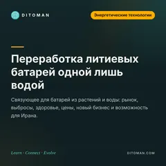
Связующее для батарей из растений и воды: рынок, выбросы, здоровье, цены, новый бизнес и возможность для Ирана.
چسب باتری از گیاه و آب: بازار، گازهای گلخانهای، سلامت، قیمت، کسبوکارهای تازه و فرصت ایران.
Читать материал
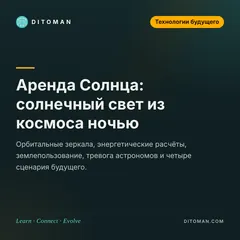
Орбитальные зеркала, энергетические расчёты, землепользование, тревога астрономов и четыре сценария будущего.
آینههای فضایی، حساب انرژی، کاربری زمین، نگرانی اخترشناسان و چهار سناریو برای آینده.
Читать материал
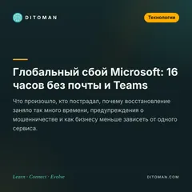
Что произошло, кто пострадал, почему восстановление заняло так много времени, предупреждения о мошенничестве и как бизнесу меньше зависеть от одного сервиса.
چه اتفاقی افتاد، چه کسانی آسیب دیدند، چرا بازیابی طول کشید، هشدار کلاهبرداری و درسها برای کسبوکارها.
Читать материал
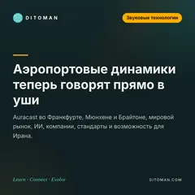
Auracast во Франкфурте, Мюнхене и Брайтоне, мировой рынок, ИИ, компании, стандарты и возможность для Ирана.
Auracast در فرانکفورت، مونیخ و برایتون، بازار جهانی، هوش مصنوعی، شرکتها، استانداردها و فرصت صنعت صوت ایران.
Читать материал
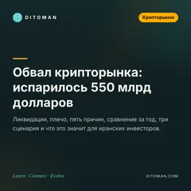
Ликвидации, плечо, пять причин, сравнение за год, три сценария и что это значит для иранских инвесторов.
لیکوئیدیشن و اهرم، پنج دلیل سقوط، مقایسه با یک سال پیش، سه سناریوی آینده و اثر بر سرمایهگذار ایرانی.
Читать материал
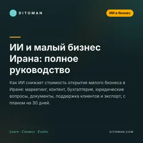
Как ИИ снижает стоимость открытия малого бизнеса в Иране: маркетинг, контент, бухгалтерия, юридические вопросы, документы, поддержка клиентов и экспорт, с планом на 30 дней.
هوش مصنوعی در بازاریابی، محتوا، حسابداری، امور حقوقی، مدارک، خدمات مشتری و صادرات؛ با حسابوکتاب واقعی و برنامهی ۳۰ روزه.
Читать материал
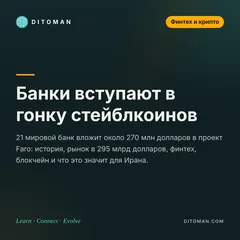
21 мировой банк вложит около 270 млн долларов в проект Faro: история, рынок в 295 млрд долларов, финтех, блокчейн и что это значит для Ирана.
۲۱ بانک بزرگ جهان با حدود ۲۷۰ میلیون دلار وارد بازار استیبلکوین شدند: تاریخچه، بازار ۲۹۵ میلیارد دلاری، فینتک، بلاکچین و معنای آن برای ایران.
Читать материал
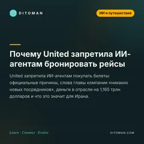
United запретила ИИ-агентам покупать билеты: официальные причины, слова главы компании «никаких новых посредников», деньги в отрасли на 1,165 трлн долларов и что это значит для Ирана.
یونایتد خرید بلیت با هوش مصنوعی را ممنوع کرد: دلایل رسمی، «واسطهی تازه نمیخواهم»، اعداد صنعت ۱٫۱۶۵ تریلیون دلاری و فرصتها برای ایران.
Читать материал
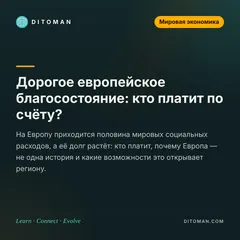
На Европу приходится половина мировых социальных расходов, а её долг растёт: кто платит, почему Европа — не одна история и какие возможности это открывает региону.
اروپا نیمی از هزینهی اجتماعی جهان را خرج میکند: چه کسی میپردازد، چرا همهی اروپا یکی نیست و چه فرصتهایی برای منطقه ساخته میشود.
Читать материал
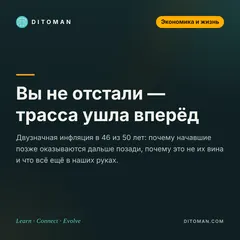
Двузначная инфляция в 46 из 50 лет: почему начавшие позже оказываются дальше позади, почему это не их вина и что всё ещё в наших руках.
تورم دو رقمی در ۴۶ سال از ۵۰ سال: چرا دیر رسیدن گران است، چرا تقصیر تو نیست و چه چیزی هنوز در اختیار ماست.
Читать материал
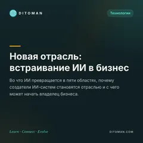
Во что ИИ превращается в пяти областях, почему создатели ИИ-систем становятся отраслью и с чего может начать владелец бизнеса.
هوش مصنوعی در پنج حوزه چه چیزی را به چه تبدیل میکند و یک تاجر یا کارخانهدار ایرانی از کجا شروع کند.
Читать материал
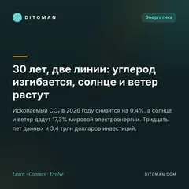
Ископаемый CO₂ в 2026 году снизится на 0,4%, а солнце и ветер дадут 17,3% мировой электроэнергии. Тридцать лет данных и 3,4 трлн долларов инвестиций.
انتشار کربن فسیلی در ۲۰۲۶ کم میشود و خورشید و باد به ۱۷٫۳٪ برق جهان رسیدهاند؛ سی سال داده و ۳٫۴ تریلیون دلار سرمایهگذاری.
Читать материал
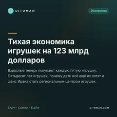
Взрослые теперь покупают каждую пятую игрушку. Пятьдесят лет игрушек, почему дети всё ещё их хотят и шанс Ирана стать региональным центром игрушек.
بزرگسالها حالا یکپنجم خریداران اسباببازیاند؛ ۵۰ سال تاریخ اسباببازی و فرصت ایران در بازار منطقه.
Читать материал
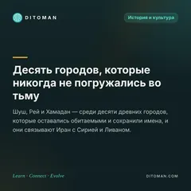
Шуш, Рей и Хамадан — среди десяти древних городов, которые оставались обитаемыми и сохранили имена, и они связывают Иран с Сирией и Ливаном.
شوش، ری و همدان در میان ده شهر کهنیاند که هزاران سال مسکونی ماندهاند و نامشان را نگه داشتهاند.
Читать материал
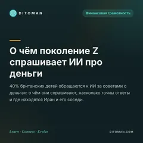
40% британских детей обращаются к ИИ за советами о деньгах: о чём они спрашивают, насколько точны ответы и где находятся Иран и его соседи.
۴۰٪ بچههای بریتانیایی سؤال پولی را از هوش مصنوعی میپرسند: چه میپرسند، جوابها چقدر درست است و ایران و همسایهها کجا هستند.
Читать материал
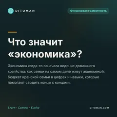
Экономика когда-то означала ведение домашнего хозяйства: как семьи на самом деле живут экономикой, бюджет иранской семьи в цифрах и навыки, которые помогают сводить концы с концами.
اقتصاد از اول یعنی ادارهی خانه: دخل و خرج خانوار ایرانی با عدد و مهارتهایی که خانوادهها با آن از پس زندگی برمیآیند.
Читать материал
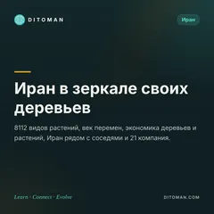
8112 видов растений, век перемен, экономика деревьев и растений, Иран рядом с соседями и 21 компания.
۸٬۱۱۲ گونهی گیاهی، صد سال تغییر، اقتصاد درخت و گیاه، مقایسه با همسایهها و ۲۱ شرکت.
Читать материал
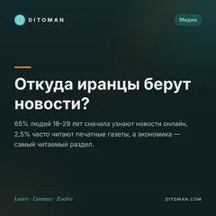
65% людей 18–29 лет сначала узнают новости онлайн, 2,5% часто читают печатные газеты, а экономика — самый читаемый раздел.
۶۵٪ جوانها خبر را اول آنلاین میگیرند، ۲٫۵٪ اغلب روزنامهی کاغذی میخوانند و اقتصاد پرخوانندهترین صفحه است.
Читать материал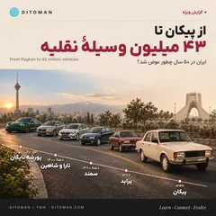
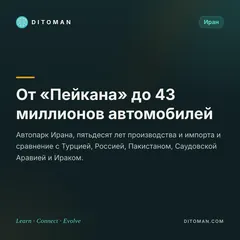
Автопарк Ирана, пятьдесят лет производства и импорта и сравнение с Турцией, Россией, Пакистаном, Саудовской Аравией и Ираком.
ناوگان ایران، ۵۰ سال تولید و واردات، و مقایسه با ترکیه، روسیه، پاکستان، عربستان و عراق.
Читать материал
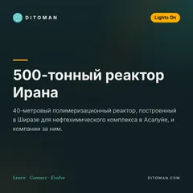
40-метровый полимеризационный реактор, построенный в Ширазе для нефтехимического комплекса в Асалуйе, и компании за ним.
راکتور پلیمریزاسیون ۴۰ متری ساخت شیراز برای عسلویه، و شرکتهایی که پشت آناند.
Читать материал
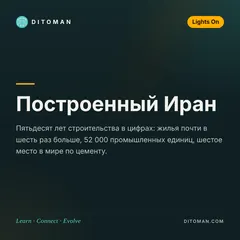
Пятьдесят лет строительства в цифрах: жилья почти в шесть раз больше, 52 000 промышленных единиц, шестое место в мире по цементу.
۵۰ سال ساختن با عدد: خانهها نزدیک ۶ برابر، ۵۲ هزار واحد صنعتی، ششمِ جهان در سیمان.
Читать материал
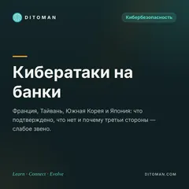
Франция, Тайвань, Южная Корея и Япония: что подтверждено, что нет и почему третьи стороны — слабое звено.
فرانسه، تایوان، کره و ژاپن: چه تأیید شده، چه نه، و چرا شرکتهای همکار حلقهی ضعیفاند.
Читать материал
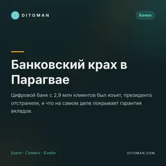
Цифровой банк с 2,9 млн клиентов был изъят, президента отстранили, и что на самом деле покрывает гарантия вкладов.
بانکی با ۲٫۹ میلیون مشتری بسته شد و رئیسجمهور برکنار شد؛ ضمانت سپرده واقعاً چه چیزی را پوشش میدهد؟
Читать материал
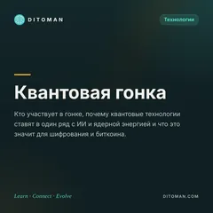
Кто участвует в гонке, почему квантовые технологии ставят в один ряд с ИИ и ядерной энергией и что это значит для шифрования и биткоина.
چه کشورهایی در این مسابقهاند و چه اثری بر رمزنگاری و بیتکوین دارد.
Читать материал
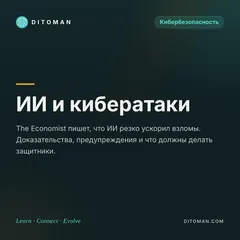
The Economist пишет, что ИИ резко ускорил взломы. Доказательства, предупреждения и что должны делать защитники.
شواهد، هشدارها و کاری که مدافعان باید بکنند.
Читать материал
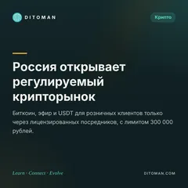
Биткоин, эфир и USDT для розничных клиентов только через лицензированных посредников, с лимитом 300 000 рублей.
سه رمزارز برای مردم عادی، فقط از راه واسطههای مجاز و با سقف سالانه.
Читать материал
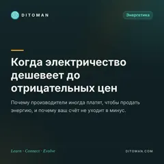
Почему производители иногда платят, чтобы продать энергию, и почему ваш счёт не уходит в минус.
چرا تولیدکننده برای فروش برق پول میدهد و چرا قبض تو منفی نمیشود.
Читать материал
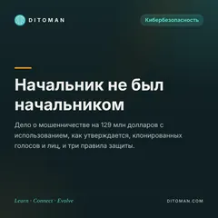
Дело о мошенничестве на 129 млн долларов с использованием, как утверждается, клонированных голосов и лиц, и три правила защиты.
پروندهی ۱۲۹ میلیون دلاری با جعل صدا و تصویر، و سه قانون ساده برای محافظت.
Читать материал
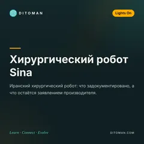
Иранский хирургический робот: что задокументировано, а что остаётся заявлением производителя.
از دانشگاه تا اتاق عمل؛ آنچه مستند است و آنچه هنوز ادعای سازنده است.
Читать материал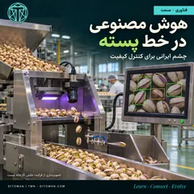
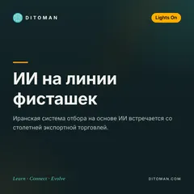
Иранская система отбора на основе ИИ встречается со столетней экспортной торговлей.
سامانهی هوشمند غربالگری آفلاتوکسین و جایگاه پستهی ایران در جهان.
Читать материал
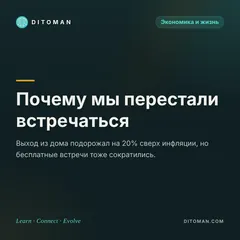
Выход из дома подорожал на 20% сверх инфляции, но бесплатные встречи тоже сократились.
گرانی تنها مقصر نیست؛ حتی دورهمی رایگان هم کم شد.
Читать материал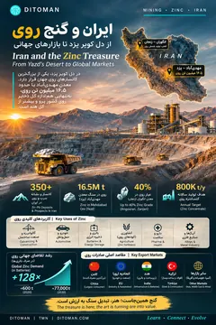
В одном месторождении в Йезде цинка примерно столько же, сколько во всех запасах Перу.
ذخیرهای در دل کویر یزد، هماندازهی ذخایر روی کشور پرو.
Читать материалИранский катализатор для оксида этилена теперь обеспечивает полную загрузку гликолевой установки Morvarid Petrochemical.
کاتالیست ایرانی EO، واحد گلایکول پتروشیمی مروارید را با ظرفیت کامل میچرخاند.
Читать материал
Как CinnaGen получила разрешение ЕС на вывод Zandoriah на рынок.
داستان مجوز اروپایی داروی زاندوریا، ساخت سیناژن.
Читать материал
Что он умеет, кому доступен и чему могут у него научиться иранцы.
چه میکند، چه کسانی از آن استفاده میکنند و چه درسی برای ما دارد.
Читать материал۳۰ درس کوتاه و دوزبانه، قدمبهقدم: از پول و تورم تا بانک، بلاکچین و هوش مصنوعی.30 коротких двуязычных уроков, шаг за шагом: от денег и инфляции до банков, блокчейна и ИИ.
Одно постоянное редакционное правило для всех трёх: настоящие знания и настоящие достижения, никаких политических комментариев с какой-либо стороны.
Как работают блокчейны, как проверить токен, прежде чем к нему прикасаться, и как защититься от мошенничества.
Честный анализ грядущих перемен, с точки зрения, на которой действительно стоит наша аудитория.
Документируем то, что построили иранцы и иранские компании, с источником для каждой цифры.
Структурированная карта того, что в Иране производят, добывают, перевозят и видят: шесть направлений, их официальные подотрасли, ведущие компании и источник для каждой цифры.


История, продукты, руководство и цифры, отрасль за отраслью, с источником для каждой цифры.
Магазин приложений Android для персоязычных пользователей; более 500 000 приложений
فروشگاه برنامهی اندروید برای فارسیزبانان؛ بیش از ۵۰۰ هزار برنامه
Смотреть карточкуБиоаналоговые препараты, лабораторные реагенты и рекомбинантные белки
داروهای زیستیمشابه، معرفهای آزمایشگاهی و پروتئینهای نوترکیب
Смотреть карточкуИранская электронная коммерция; с 2006 года
بزرگترین فروشگاه اینترنتی ایران؛ از ۲۰۰۶
Смотреть карточкуПроектирование ASIC, SoC и FPGA; 32-битный микропроцессор Aristo
طراحی تراشهی ASIC، SoC و FPGA؛ ریزپردازندهی ۳۲ بیتی آریستو
Смотреть карточкуРоботизированная хирургическая система Sina
سامانهی جراحی رباتیک سینا
Смотреть карточкуЗаказ такси с фиксированной ценой; запущен в феврале 2014 года
درخواست خودرو؛ قیمت از پیش مشخص؛ آغاز فوریهی ۲۰۱۴
Смотреть карточкуКрафт- и полукрафт-бумага, гофрокартон и коробки, картон; промышленный город Йезд
کاغذ کرافت و سمیکرافت، ورق و کارتن کنگرهای، مقوا؛ شهرک صنعتی یزد
Смотреть карточку
Один из крупнейших в Иране производителей этилена и полиэтилена, в Асалуйе, экспортирует более 70% продукции
یکی از بزرگترین تولیدکنندگان اتیلن و پلیاتیلن ایران در عسلویه؛ بیش از ۷۰٪ محصول برای صادرات
Смотреть карточкуМДФ-плиты и профили с покрытием, ПВХ-панели для стен, искусственный камень, потолочные плиты; свободная зона Энзели, Гилян
ورق و پروفیل امدیاف روکشدار، دیوارپوش پیویسی، سنگ مصنوعی و تایل سقفی؛ منطقه آزاد انزلی، گیلان
Смотреть карточкуЛекарства из трав, косметика, пищевые продукты и эфирные масла; Кашан, Исфахан (завод возле Камсара)
داروی گیاهی، آرایشی و غذایی بر پایهی گیاهان دارویی؛ اسانس؛ کاشان، اصفهان (کارخانه نزدیک قمصر)
Смотреть карточкуЦеллюлоза и бумага; Гилян
خمیر کاغذ و کاغذ؛ گیلان
Смотреть карточкуРозовая вода, травяные дистилляты, натуральные сиропы и сушёные травы; промышленный город Амиркабир-1, Кашан
گلاب، عرقیات گیاهی، شربت طبیعی و گیاهان دارویی خشک؛ شهرک صنعتی امیرکبیر ۱، کاشان
Смотреть карточку«بیسوادان قرن بیستویکم کسانی نیستند که نمیتوانند بخوانند؛ کسانیاند که نمیتوانند یاد بگیرند، از یاد ببرند و دوباره یاد بگیرند.»
«Неграмотными в XXI веке будут не те, кто не умеет читать и писать, а те, кто не умеет учиться, отучаться и переучиваться».
Ditoman получил название от томана — повседневного названия иранских денег: «цифровой томан». TMN запущен в сети BNB Smart Chain в феврале 2022 года с одним вопросом: может ли само знание нести реальную ценность?
Почти четыре года мы намеренно молчали. Никакого маркетинга, никакой продажи токенов, никакого запуска. Эта история хранится в блокчейне, любой может её проверить, и это самый ясный знак: проект никогда не создавался ради быстрой накачки.
Короткие уроки по темам, около пяти минут каждый, на двух языках, каждый заканчивается тестом.
Уроки, короткие разборы новостей и обновления — на персидском и английском. Никаких сигналов, никакого хайпа.
TMN — токен BEP-20, стоящий за Ditoman, задуманный для признания настоящего обучения и вклада. Это не инвестиционный продукт, и мы никого не просим его покупать.
Несколько не связанных между собой токенов используют тикер TMN. Это единственный официальный контракт:
0x86a56e59f22Eaf3867EEeB41fB9BfA81BacE790d
نقطهضعفها را هم مینویسیم، چون درس بررسی توکن یاد میدهد دنبالشان بگردی.
Этапы, а не даты. Мы честно сообщаем о прогрессе, включая то, что не получилось.
Контракт проверен, владение отозвано, около 20% предложения выведено из обращения, двуязычные уроки опубликованы, whitepaper утверждён.
Сообщество в Telegram с реальными правилами, готовыми уроками и понятным вводом — до любых приглашений.
29 окт. 2026: вся ликвидность TMN/BNB в основном кошельке проекта заблокирована до 29 октября 2027 года. Проверить блокировку · Что это значит
۷ آبان ۱۴۰۵: همهی لیکوئیدیتی TMN/BNB کیفپول اصلی پروژه تا ۷ آبان ۱۴۰۶ قفل شد.
Вхождение в персоязычные крипто- и диаспорные сообщества и первое публичное изъятие предложения с доказательством.
Прочитайте десять уроков, пройдите тест из десяти вопросов и получите 500 000 TMN — первые 1000 человек. Начните здесь.
ده درس را بخوان، در آزمون دهسؤالی قبول شو و ۵۰۰٬۰۰۰ TMN بگیر؛ برای ۱٬۰۰۰ نفر اول. از اینجا شروع کن.
Двуязычный образовательный проект на трёх опорах: практическая крипто- и финансовая грамотность, честный анализ ИИ, энергетики и будущего работы и освещение реальных достижений иранцев и иранских компаний.
از کسی نمیخواهیم بخرد. عرضهی TMN متمرکز است. صفحهی TMN را بخوان و با همان معیارهایی بسنجش که هر توکن دیگری را میسنجی.
Нет. Ditoman — образовательный проект. Ничто здесь не является инвестиционным советом, а уроки созданы, чтобы помочь вам принимать решения самостоятельно.
Это постоянное редакционное правило. Мы документируем настоящие знания и настоящие достижения и не комментируем политику ни с какой стороны.
Да. Пилот «Учись и зарабатывай» открыт: прочитайте десять уроков, пройдите тест из десяти вопросов и получите 500 000 TMN — первые 1000 человек. Начните здесь.
بله. طرح «یاد بگیر، توکن بگیر» باز است: ده درس را بخوان، در آزمون دهسؤالی قبول شو و ۵۰۰٬۰۰۰ TMN بگیر؛ برای ۱٬۰۰۰ نفر اول. از اینجا شروع کن.
Одним документом задано направление. Прочитайте его, прежде чем верить чему-либо из того, что мы говорим.
گزارشها، آموزشها و روایتهای امیدبخش، هر روز در کانالهای دیتومان.